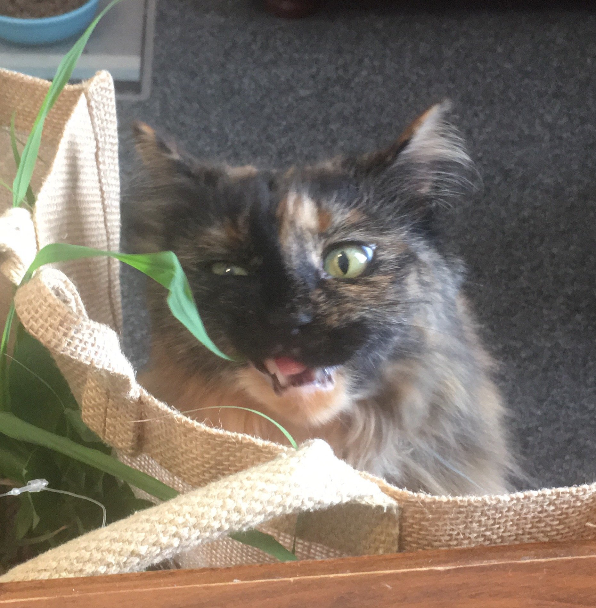

(The greatest cat in the world)
Before we get started, tha fuck is positioning?
You know the web page you scroll through from top to bottom? That page uses a basic ‘document flow behaviour, as in, you’re scrolling down and seeing all the text/images of the page. The default behaviour of the document flow follows the Eurocentric reading of text from left to right, top to bottom. Each picture or text that you’re seeing is placed there either by default or on purpose. In CSS, this default setting can be purposefully allocated as ‘Static’. So, when we allocate a text or image to be somewhere we are positioning it to be in that spot.
Ok, so what’s ‘Relative Positioning’?
Relative positioning is similar to Static positioning in that it follows the default (goes where you would expect it to go according to the HTML sequence that you wrote it in) EXCEPT you can change how it sits in that spot on the page by directing it to the top, bottom, right and left. The original developers who wrote this code were on some bullshit and flipped the commands so when you instruct the element with ‘top’ it’ll move it to the bottom and if you instruct it with ‘right’ it’ll move to the left.
To help you make sense of this counter-intuitive nonsense Dante is here to help! When Dante’s feeling grumpy and you try to pat the TOP of her head, she’ll dodge you (and all the love you have to give) by moving her head down (BOTTOM). Grumpy Dante does the same when you try to smooch up to her on the LEFT, she’ll leave your vulnerable ass and move to the RIGHT. So the next time you’re trying to remember the ways to instruct Relative Positioning remember- Grumpy Dante doesn’t want your love!
Next up, Absolute Positioning!
Absolute positioning is kinda like the element died and became an ethereal being, floating around the HTML world, not really tied to it but still visible- like on a separate layer. It creates features that don’t fuck with the position of other elements on the screen and makes things like popup information boxes or items that can be dragged and dropped. If all you do is set an elements positioning to ‘Absolute’ then it’s gonna act like a static positioning but in the element ghost world and be relative to the initial view port. To combat that and give our ghost element a bit of guidance while it’s haunting our webpage, you can do a lil element séance and tie it to one of it’s ‘ancestor’ elements. This basically just means an element that it exists within. This keeps the absolute element tethered to that part of the page and somewhat contained.
Alright, alright, alright! So what’s ‘Fixed’ positioning then?
Fixed positioning works the same way as Absolute positioning (aka ghost world) except rather than running the séance and telling it where to stay in relation to the HTML document you’re telling it where to stay in relation to the browser viewport so you have to put a bit more effort into telling it exactly where on the screen it would go but the cool thing is that it isn’t affected by scrolling which makes for a snazy effect.